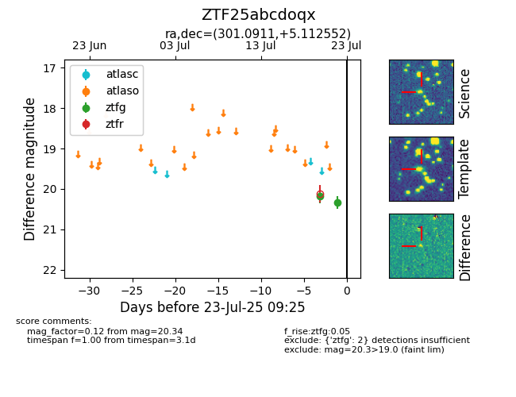

Target ZTF25abcdoqx at 2025-08-06 17:27, see:
FINK: fink-portal.org/ZTF25abcdoqx
Lasair: lasair-ztf.lsst.ac.uk/objects/ZTF25abcdoqx
ALeRCE: alerce.online/object/ZTF25abcdoqx
alt names
ZTF25abcdoqx (ztf,fink)
coordinates:
equatorial (ra, dec) = (301.0911,+5.11255)
galactic (l, b) = (46.1040,-13.69183)
photometry
last ztfg=20.22, ztfr=20.27
3 ztfg, 2 ztfr detections
